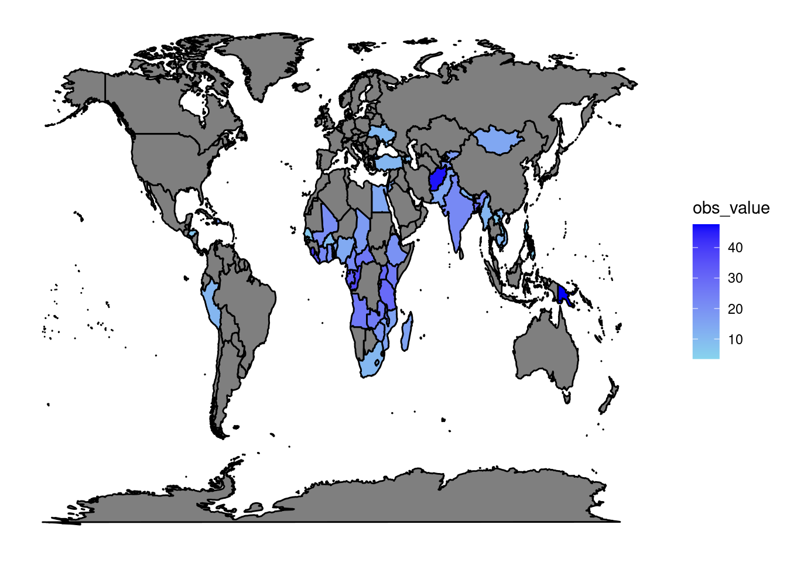
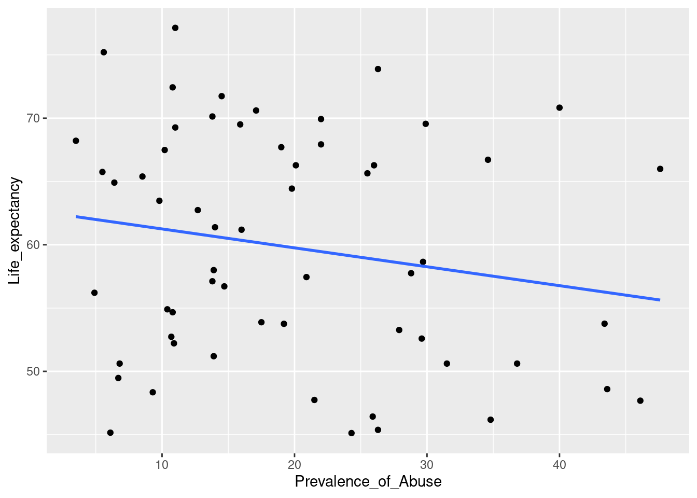
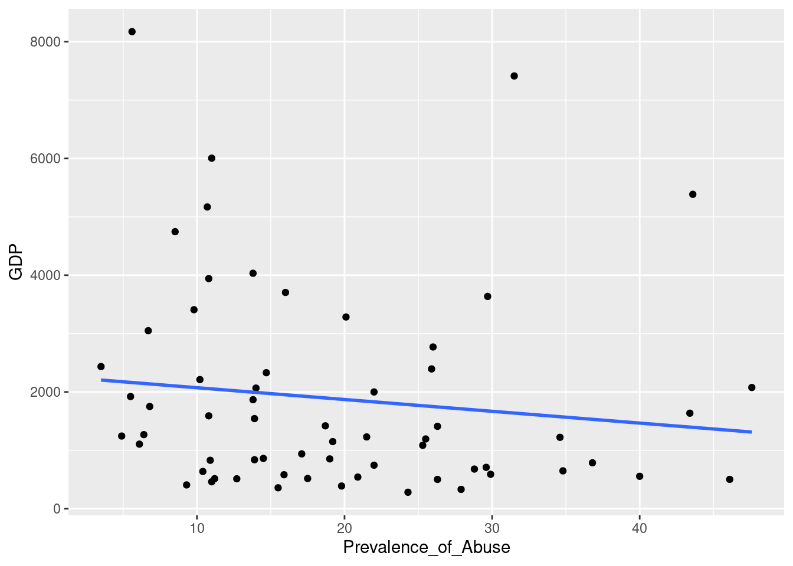
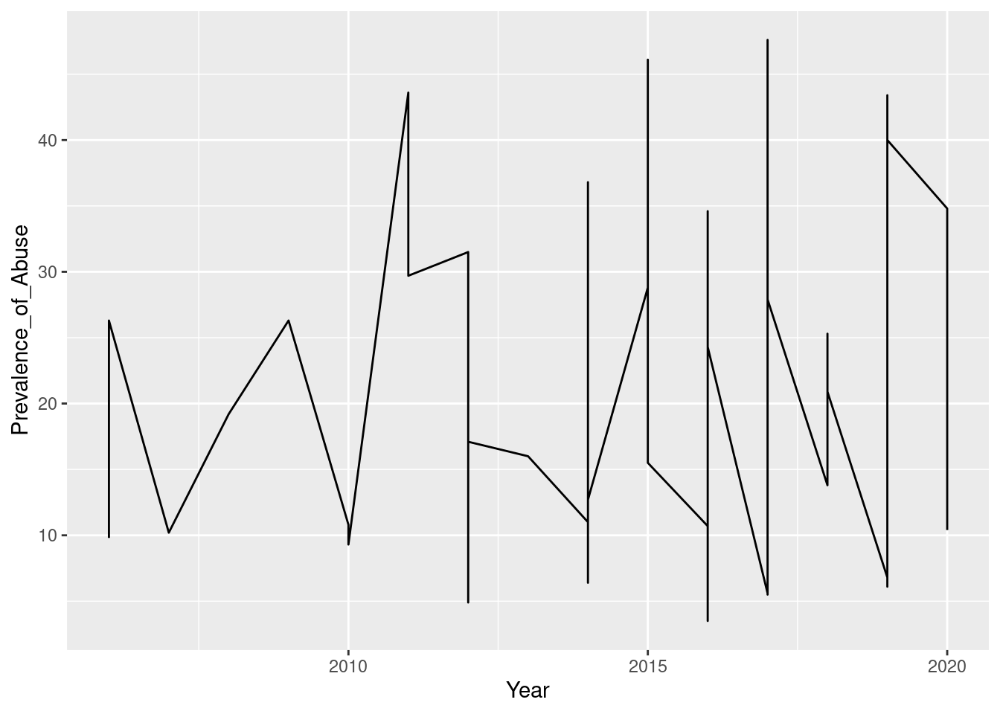
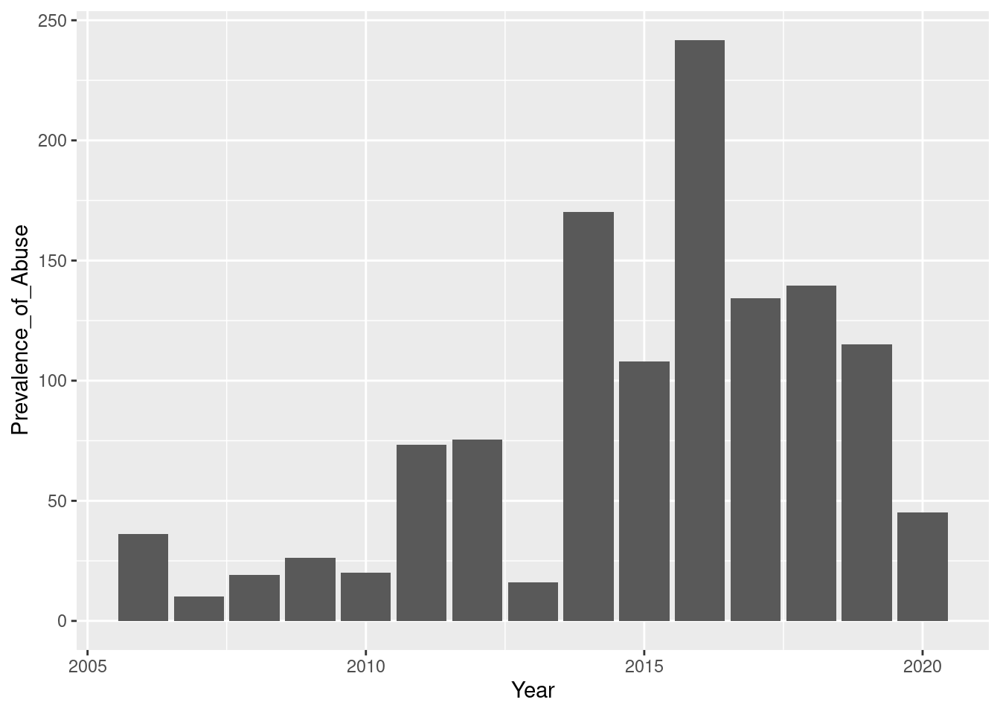

An Investigation of Intimate Partner Violence
MT5000 Data Analytics & Visualisation Assignment 2
The data used to generate this report was gathered by Unicef. The proportion of ever-partnered women and girls aged 15 years and older, subjected to physical, sexual or psychological violence, by a current or former intimate partner in the previous 12 months, is an indicator of the United Nations (UN) sustainable development goal 5.2: Eliminate all forms of violence against all women and girls in the public and private spheres.
Figure 1: Prevalence of Abuse per Country
Figure 1 displays the prevalence of domestic abuse among the countries included in the data set.
The highest prevalence of abuse is observed in Papua New Guinea.
The lowest rate of domestic abuse is observed in Armenia.

Figure 2: Life Expectancy versus prevalence of abuse
Figure 2 displays a moderate negative relationship between the rate of domestic abuse in a country and its life expectancy. This demonstrates the negative effects of violence against women on the health of the population.

Figure 3: Life Expectancy versus prevalence of abuse
Figure 3 demonstrates a moderate negative relationship between the rate of domestic abuse in a country and its Gross Domestic Product (GDP). This demonstrates the negative effects of violence against women has on a countries economy. This therefore, supports the research reporting that the missed work of female victims of domestic abuse, translates to lost productivity for businesses and the overall economy (WHO, 2018).

Figure 4: Prevalence of Abuse recorded per Year
Figure 4 These values represent the years in which data was recorded and the degree of abuse recorded during each.

Figure 5: Prevalence of Abuse recorded per Year
Figure 5 demonstrates an apparent increase in the observed value of domestic abuse over time. There is a marked decrease in levels of recorded abuse demonstrated in 2013, before rising significantly in 2014.
This report has demonstrated an associated between a countries rate of domestic abuse and both life expectancy and GDP. The findings of this analysis position the achievement of the UN SDG 5: Achieve gender equality and empower all women and girls, as of both social and economic importance.
By: Sinead Hogan (22265954)
Due Date: 30th of April 2023
References
WHO (2018) Violence Against Women Prevalence Estimates, 2018